Discography
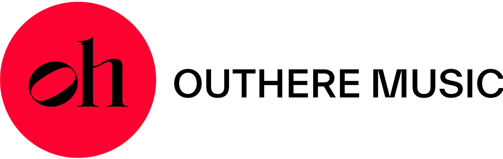
A Door Opens
New single
A Door Opens, a new work for cello and piano by American composer Mark Abel, featuring cellist Jonah Kim & pianist Keisuke Nakagoshi.
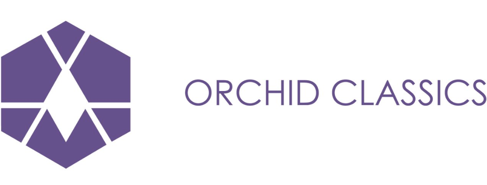
Beyond the Pacific
Trio Barclay debut album
Premiering three brand new works:
- Sheridan Seyfried – Piano Trio No. 1
- John Wineglass – Piano Trio No. 2 “Orcas Island: The Rose of the San Juan Islands”
- Michael Fine – Piano Trio No. 2 “California”
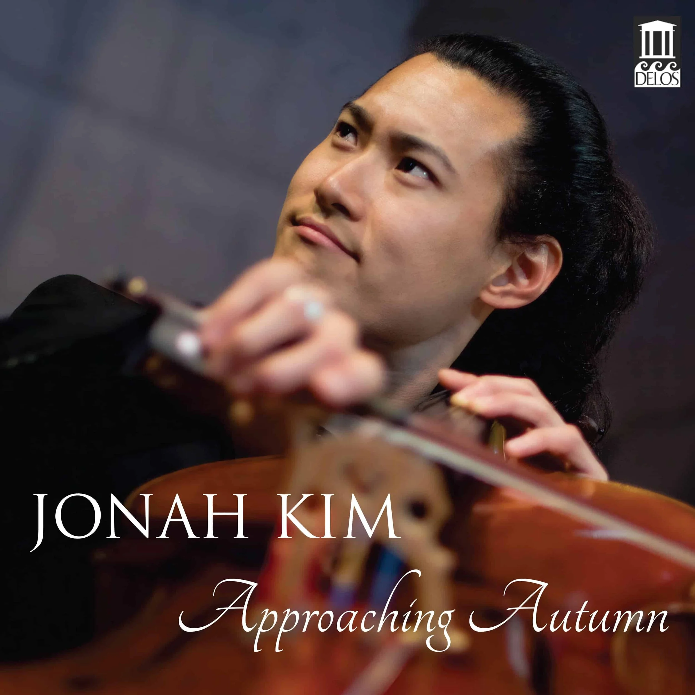
Approaching Autumn
with Robert Koenig, pianist
“in this superlative CD, Jonah Kim and Robert Koenig prove to be the ideal interpreters of this music… a memorable album of music familiar and unfamiliar”Rafael de Acha, All About the Arts
- Allegro maestoso ma appassionato (9:10)
- Adagio (con gran expressione) (11:51)
- Allegro molto vivace (12:19)
Edvard Grieg — Sonata for Cello and Piano, Op. 36 (29:25)
- Allegro agitato (9:48)
- Andante molto tranquillo (6:11)
- Allegro molto e marcato (13:26)
Rachmaninoff & Barber: Cello Sonatas
Barber — Sonata for Violoncello and Piano, Op. 6: Allegro ma non troppo; Adagio, Presto, di nuovo Adagio; Allegro appassionato
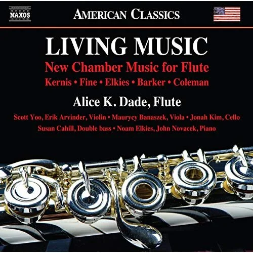
Living Music
Air (Version for Flute & String Quartet) · Skipping Stones · E Sonata, Op. 40 (three movements) · Na Trì Peathraichean (three movements) · Pavanes & Symmetries
Order Now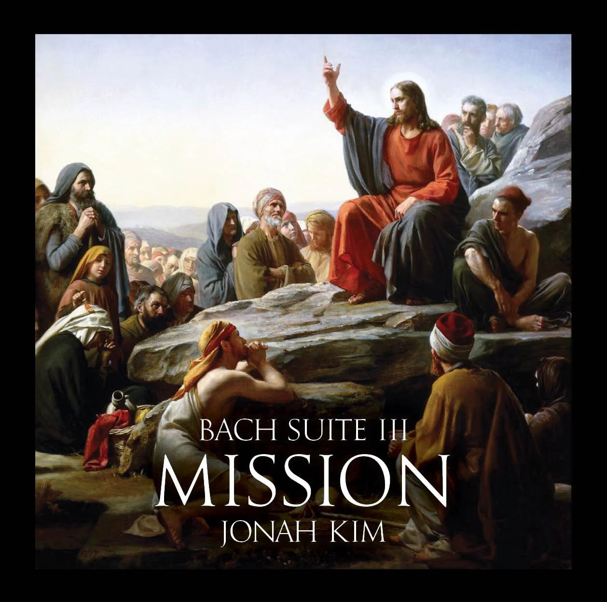
Bach Suite III: Temptation
Unaccompanied Cello Suite III — Prelude, Allemande, Courante, Sarabande, Bourrée, Gigue
Apple Music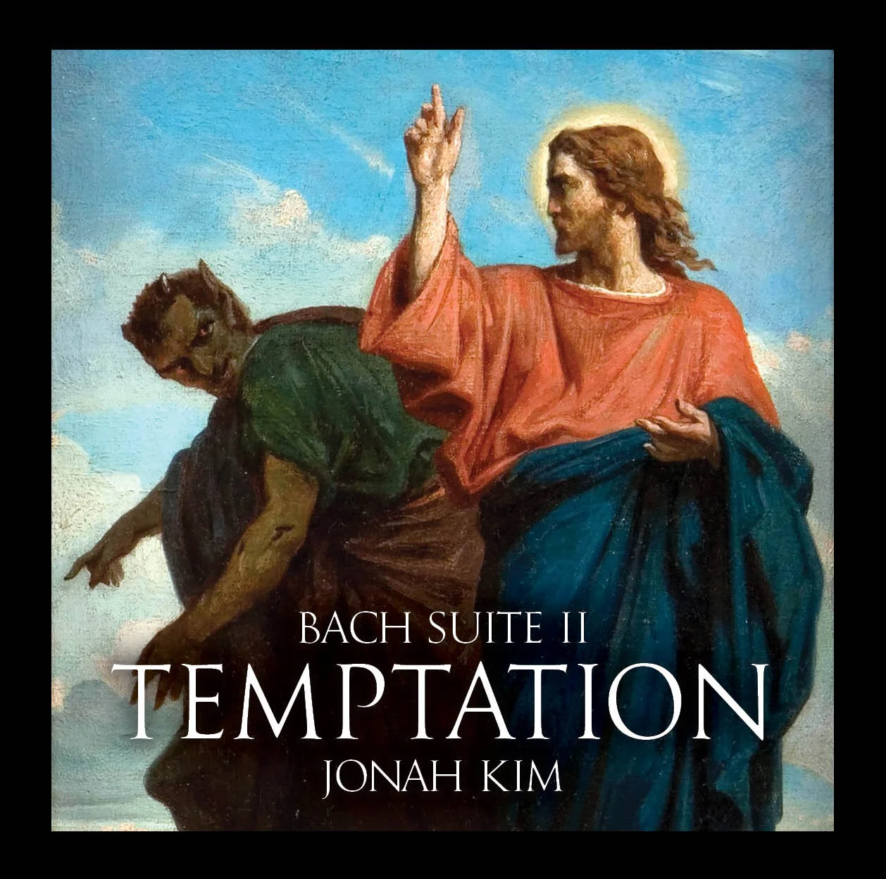
Bach Suite II: Temptation
Unaccompanied Cello Suite II — Prelude, Allemande, Courante, Sarabande, Minuet, Gigue
Spotify Now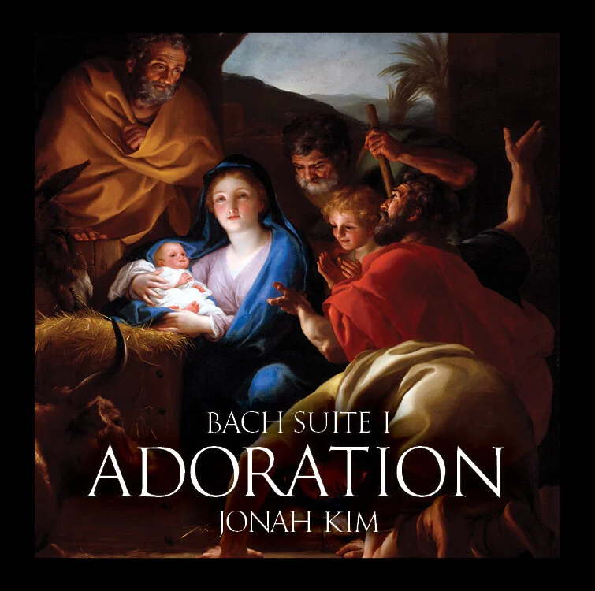
Bach Suite I: Adoration
Unaccompanied Cello Suite I — Prelude, Allemande, Courante, Sarabande, Minuet, Gigue
Spotify Now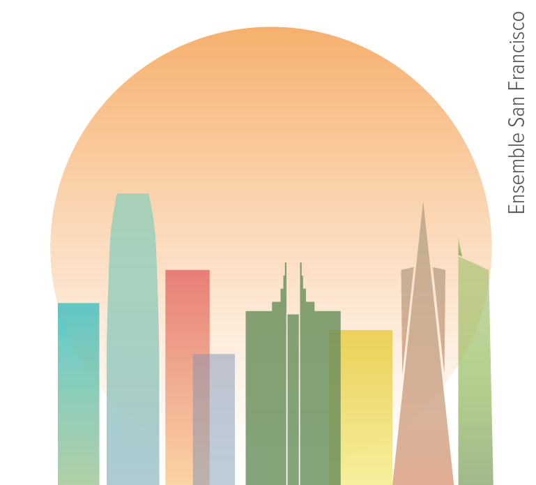
Ensemble San Francisco
Schumann — Piano Quartet in E-flat Major, Op. 47 (four movements) · Dohnányi — Serenade Trio for Strings in C Major, Op. 10 (five movements) · Schumann–Liszt: Widmung
Order Now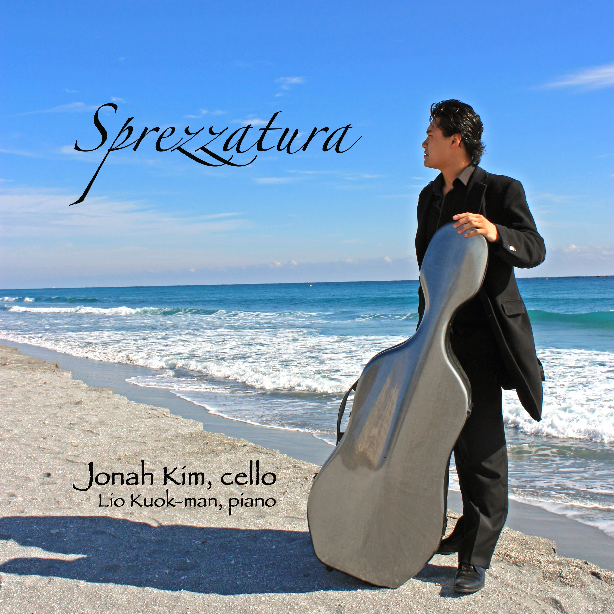
Sprezzatura
Sgambati, Chaminade, Popper, Rachmaninov, Chopin, Seyfried, Grant, and a limited-edition Paganini bonus track (post-concert sales only)
Order Now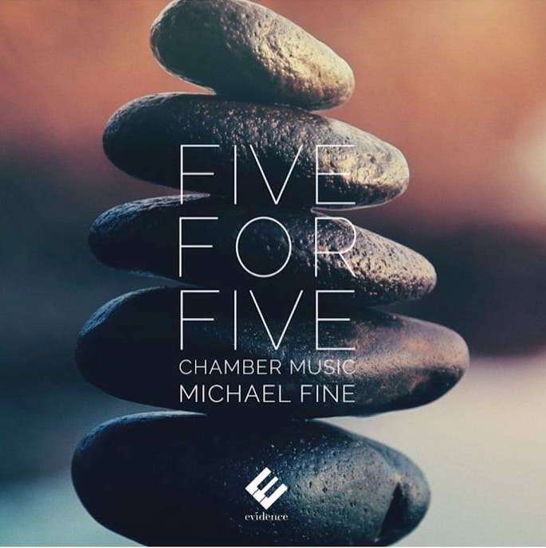
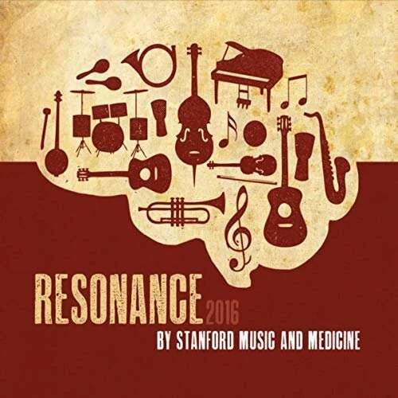
Resonance
A Sea of Stars · Fix You Slowly · Thillana in Raag Sindhu Bhairavi · Ribbon in the Sky · Say Something · The Writer · Ain’t No Sunshine · and more — 13 tracks featuring guest vocalists and musicians
Order Now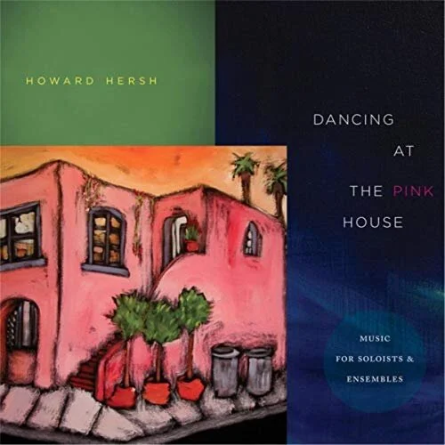
Dancing at the Pink House
Madam’s Tavern · Loop · I Love You, Billy Danger · Night · Dancing at the Pink House
Amazon